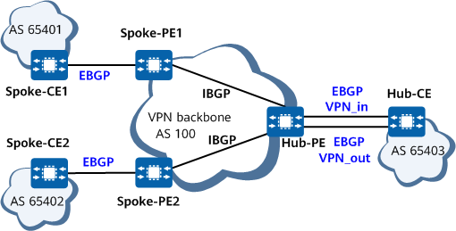
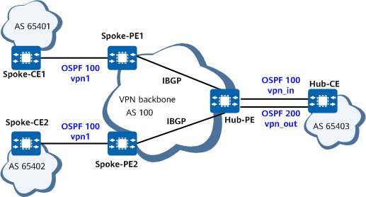
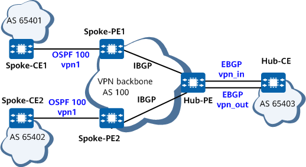

The hub-spoke networking can be adopted to set an access control device on a VPN to control communication between user devices. The central access control device is called a hub node, and user devices are called spoke nodes. At the hub site, a device that accesses the VPN backbone network is called a Hub-CE. At a spoke site, a device that accesses the VPN backbone network is called a Spoke-CE. On the VPN backbone network, a device that accesses the hub site is called a Hub-PE, and a device that accesses a spoke site is called a Spoke-PE.
A spoke site advertises routes to the hub site, and then the hub site advertises the routes to other spoke sites. Spoke sites do not advertise routes to each other. The hub site controls the communication between the spoke sites.
In hub-spoke networking, two VPN targets are configured to represent hub and spoke respectively.
The VPN target configuration on a PE must comply with the following rules:
The export target and import target of the Spoke-PE at a spoke site are Spoke and Hub, respectively. The import target of a Spoke-PE is different from the export targets of other Spoke-PEs.
A Hub-PE requires two interfaces or sub-interfaces. One interface or sub-interface receives routes from Spoke-PEs, and the import target of the VPN instance on the interface is Spoke. The other interface or sub-interface advertises the routes to Spoke-PEs, and the export target of the VPN instance on the interface is Hub.
As shown in Figure 1, the communication between spoke sites is controlled by the hub site. The lines with arrowheads show the process of advertising a route from Site 2 to Site 1.
The Hub-PE can receive the VPN-IPv4 routes advertised by all Spoke-PEs.
All the Spoke-PEs can receive the VPN-IPv4 routes advertised by the Hub-PE.
The Hub-PE advertises the routes learned from the Spoke-PEs to the Hub-CE, and advertises the routes learned from the Hub-CE to all the Spoke-PEs. Therefore, the spoke sites can access each other through the hub site.
The import target of a Spoke-PE is different from the export targets of other Spoke-PEs. Therefore, two Spoke-PEs cannot directly advertise VPN-IPv4 routes to each other. As a result, the spoke sites cannot access each other.
The transmission path between Site 1 and Site 2 in Figure 1 is shown in Figure 2. The lines with arrowheads indicate the path from Site 1 to Site 2.
Hub-spoke networking schemes include:
EBGP running between the Hub-CE and Hub-PE, and between Spoke-PEs and Spoke-CEs
IGP running between the Hub-CE and Hub-PE, and between Spoke-PEs and Spoke-CEs
EBGP running between the Hub-CE and Hub-PE, and IGP running between Spoke-PEs and Spoke-CEs
The following describes these networking schemes:
EBGP running between the Hub-CE and Hub-PE, and between Spoke-PEs and Spoke-CEs

On the network shown in Figure 3, a route advertised by a Spoke-CE is forwarded to the Hub-CE before being transmitted to other Spoke-PEs. If EBGP runs between the Hub-PE and Hub-CE, the Hub-PE performs AS loop detection on the route. If the Hub-PE detects its own AS number in the route, it discards the route. In this case, to implement hub-spoke networking, the Hub-PE must be configured to allow local AS number repetition in the AS_Path attribute of a route.
IGP running between the Hub-CE and Hub-PE, and between Spoke-PEs and Spoke-CEs

Because all PEs and CEs exchange routing information through IGP and IGP routes do not contain the AS_Path attribute, the AS_Path attribute of BGP-VPNv4 routes is null.
EBGP running between the Hub-CE and Hub-PE, and IGP running between Spoke-PEs and Spoke-CEs

The networking topology is similar to that shown in Figure 3. The AS_Path attribute of a Spoke-CE route forwarded by the Hub-CE to the Hub-PE contains the AS number of the Hub-PE. The Hub-PE must therefore be configured to allow local AS number repetition in the AS_Path attribute of a route.